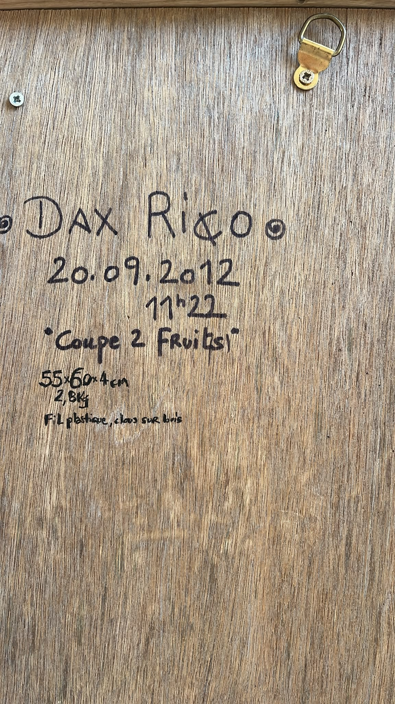
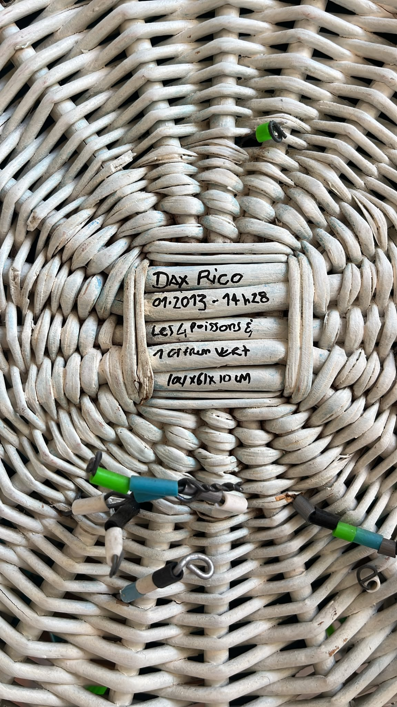
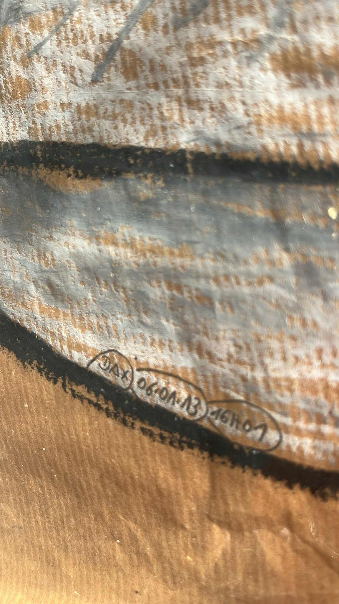
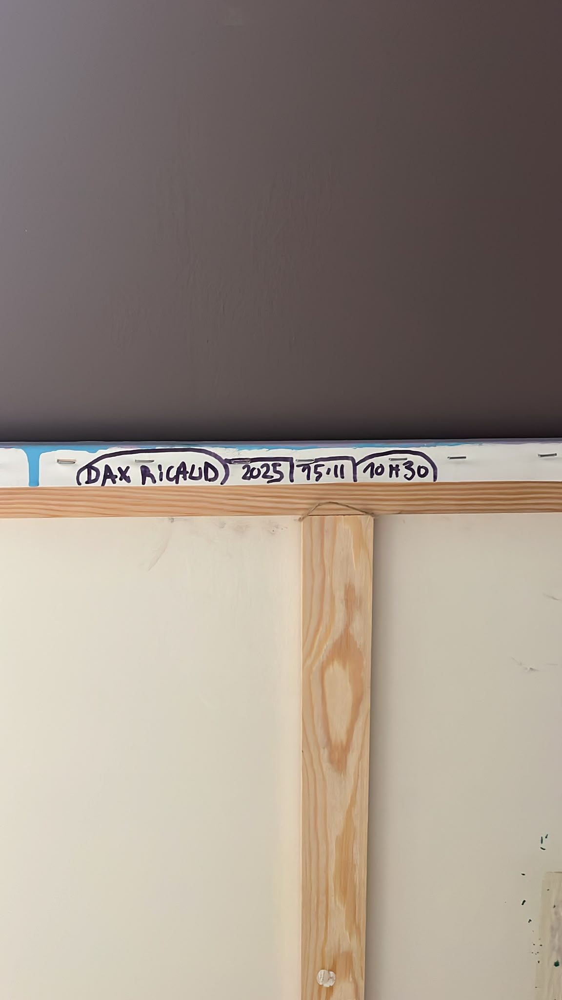
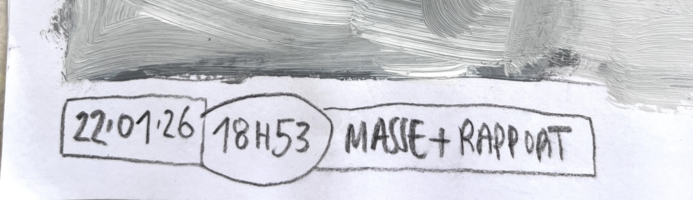
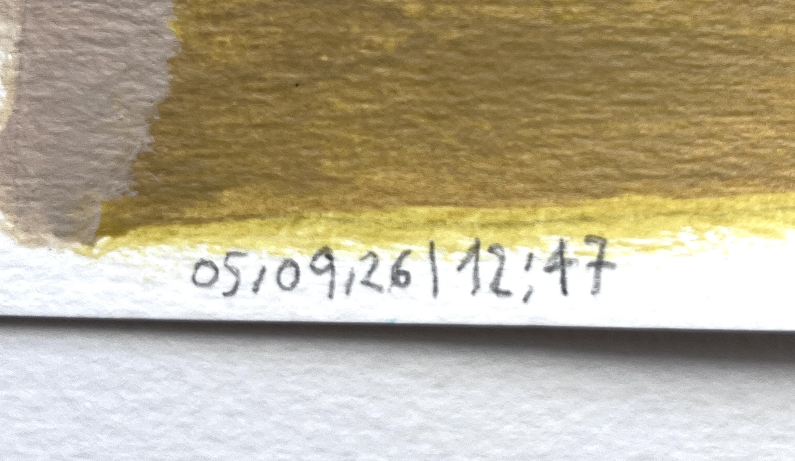

RESEARCH 01 / ACTIVE
VERSION 0.3
Temporal Signatures
How do a date and time become a form, an identifier and a point of closure?
WORKING DEFINITION
Inscribing the moment when making becomes having made.
Interpretation
The definition and research chain propose a current conceptual reading of the inscriptions, not proof of a concept already constituted at their dates.
A temporal signature is the material inscription of a date and time when a work is considered closed.
It is not merely metadata added afterwards. Through its form, position and handwriting, it enters the work. It identifies an occurrence, attests to a decision and makes a temporal threshold visible.
The research examines this passage between information and visual form, between closure and possible resumption, between a singular gesture and the gradual constitution of a register. In 2026, the underscore, vertical bar, frame and circle show that the separator itself becomes a visual operator.
RESEARCH CHAIN
From decision to archive.
Each passage may vary with the work. The chain describes a relationship, not a fixed graphic recipe.
- 01Make
The work takes shape through its medium.
- 02Close
A decision provisionally brings the making to a halt.
- 03Inscribe
The date and time take material form.
- 04Document
An image retains the inscription and its support.
- 05Connect
The document joins a register open to further occurrences.
PROVISIONAL ARCHIVE / 2012-2026
Seven inscriptions, several systems of connection.
Documented fact
The seven photographs document existing inscriptions. On their own, they do not establish the exact conditions of the works’ closure. Readings of a threshold or visual operator in the descriptions belong to the current interpretation.
These documents attest that the gesture of timestamping existed before the current formulation of the research.
They do not prove that the concept was already constituted at those dates. The views are partial and will be supplemented when the complete works can be documented.
The three 2026 entries now connect the antecedents to the active research. They reveal variations in the signs that separate and assemble the date, time, name and, at times, an indication specific to the work.

20.09.2012 | 11:22
Reverse of Coupe 2 Fruits. Title, dimensions, weight and materials accompany the timestamp.
Archive document, partial view of the work.
01.2013 | 14:28
Inscription on a wicker work. The exact day does not appear in the document and remains unrecorded.
Archive document, partial view of the work.
06.01.2013 | 16:01
Detail of a drawing. Signature, date and time are circled and connected to the composition through the same graphic continuity.
Archive document, partial view of the work.
15.11.2025 | 10:30
Inscription on the edge or reverse of a canvas. The time of closure materially accompanies the support.
Archive document, partial view of the work.
22.01.2026 | 18:53
The date is framed, the time circled and the words “MASSE + RAPPORT” extended within a single linear device. The notation visually organises several levels of information.
Archive document, partial view of the work.
13.02.2026_18:26
The underscore connects the date to the time while the circled name below the line introduces a second level of signature. The separator becomes a visible form.
Archive document, partial view of the work.
05.09.2026 | 12:47
The vertical bar clearly separates date and time. Positioned at the boundary between paint and paper, the inscription also acts as a threshold within the surface.
Archive document, partial view of the work.OPEN STATE
The register is now connected to the present of the research.
The three 2026 inscriptions establish this continuity. Future entries may combine the timestamped detail with an overall view of the work and the conditions of its closure, strengthening the documentary chain.
Back to the Index → Read the full critical legend →